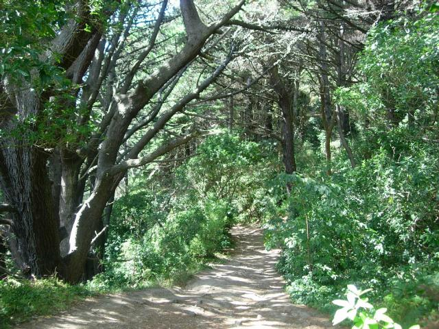
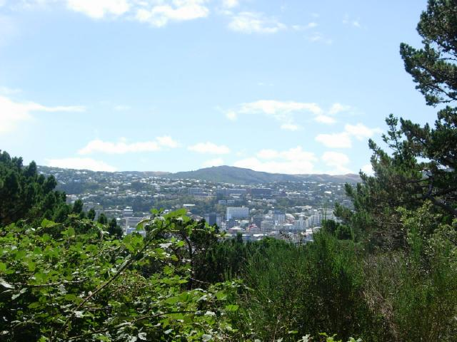
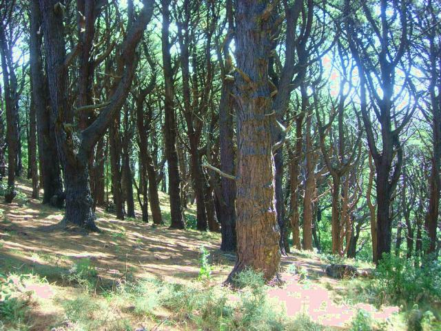

Outer Shire
These scenes were filmed on Mt. Victoria, part of Wellington's greenbelt.

Danger - Nazgul Crossing
This is where Frodo shouted "Get off the road!"

It was the movie's most accessible site. Here's the view from the same hiking trail.

Nearby is the slope down which the Hobbits outraced the Nazgul to the ferry.